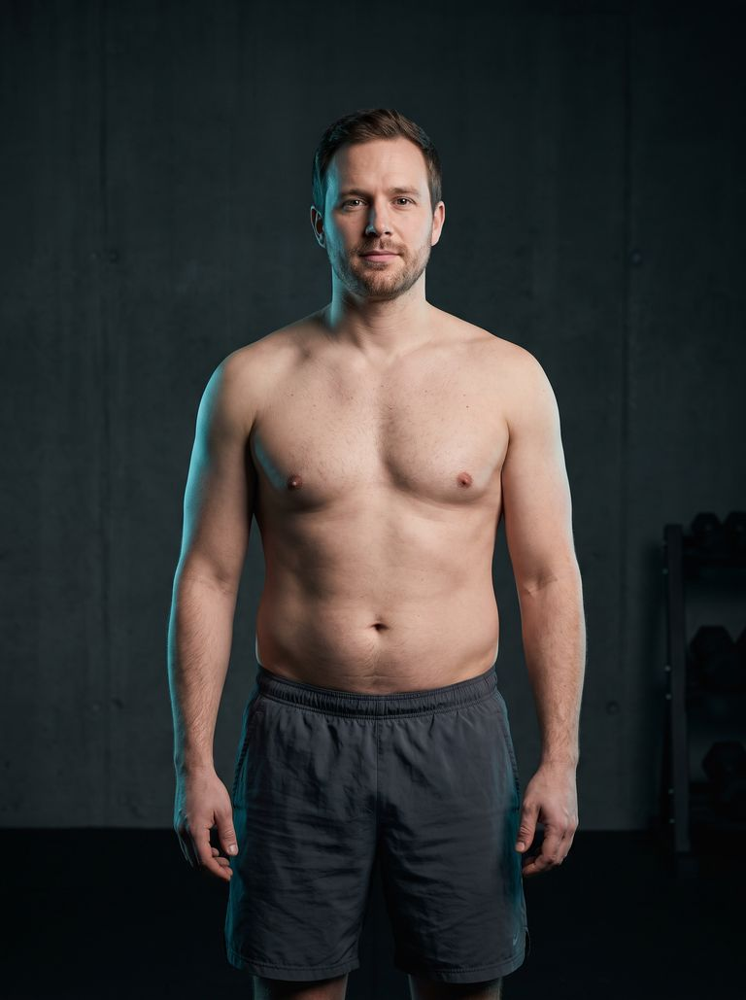
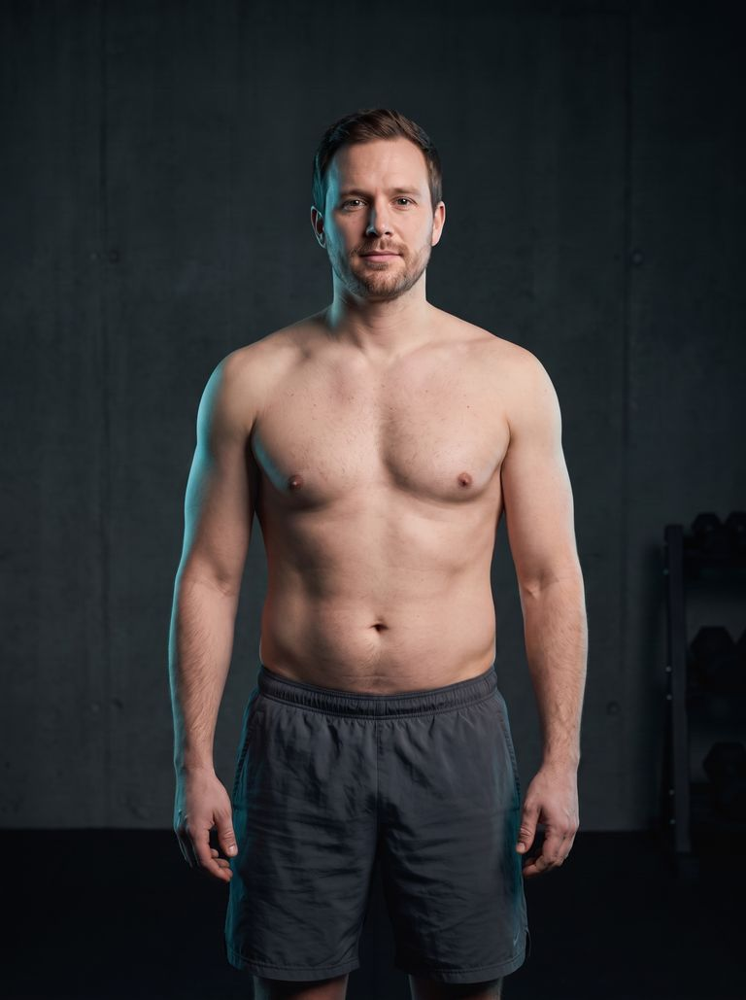
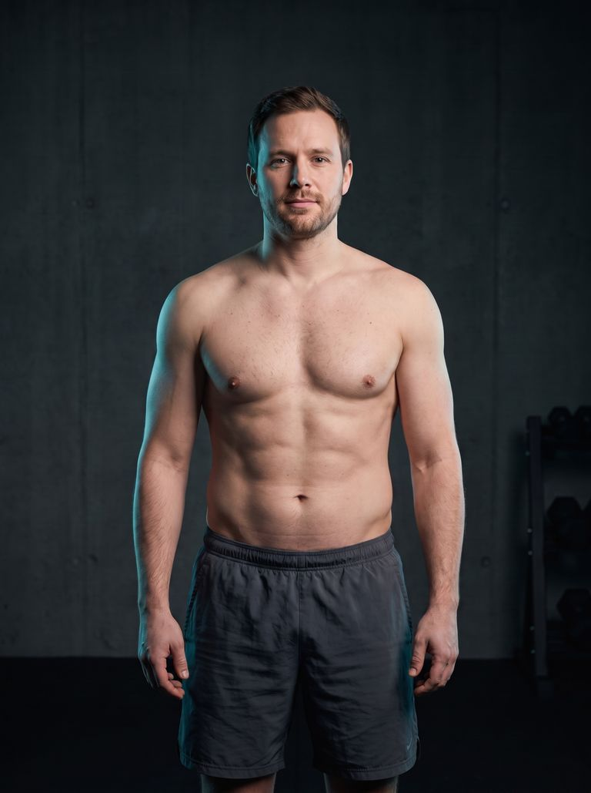

Sieh deinen
möglichen Körper.
Bevor du dafür arbeitest.
Lade ein aktuelles Foto hoch. MaleMetrix zeigt dir zwei realistische Zielkörper. Du wählst dein Ziel – und erhältst deinen persönlichen 12-Wochen-Plan für Training und Ernährung.
Oder zuerst: Kostenlosen Score starten
Zwei realistische Zielbilder · Ziel frei wählbar · Klar als KI gekennzeichnet



MaleMetrix berechnet aus Gewicht, Größe, Taille und Ausgangsform zwei plausible Zielrichtungen. Du wählst das Ziel — MaleMetrix erstellt den Weg dorthin.
Vom Foto zum Ziel — in vier Schritten.
Foto & Ausgangslage
Ein aktuelles Foto, dazu Gewicht, Größe, Taille und deine grobe Körperform — mehr braucht es nicht.
Zwei realistische Ziele
MaleMetrix rechnet deinen realistischen nächsten Zustand und ein ambitioniertes Langfrist-Ziel — beide physiologisch plausibel begrenzt.
Ein Ziel auswählen
Du siehst dich selbst in beiden Zielzuständen — als klar gekennzeichnete KI-Visualisierung aus deinem eigenen Foto — und wählst eins.
MaleMetrix baut den Weg
Zielkalorien, Protein, Trainingsfrequenz, erste Maßnahmen — und mit DAS PROTOKOLL der komplette 12-Wochen-Plan mit Tracker und Wochenreviews.
Zielvorschläge kostenlos und vor jeder Anmeldung · Konto erst unmittelbar vor der Generierung
Keine Fantasiekörper. Zwei ehrliche Optionen.
Moderat, sichtbar relevant, in einer ersten Phase erreichbar — typischerweise 12-16 Wochen. Das Ziel, das dich tatsächlich in Bewegung bringt.
Deutlich stärker, aber weiterhin physiologisch plausibel — als mehrphasiges Ziel geplant, nicht als Crash-Versprechen.
Zwei plausible Zielrichtungen für deine Ausgangslage — wer schon schlank ist, bekommt Rekomposition oder moderaten Aufbau statt weiterer Abnahme. Dein eigenes Wunschziel trägst du frei ein; MaleMetrix ordnet es offen ein (plausibel, ambitioniert oder nicht seriös), die Entscheidung bleibt bei dir. Das Bild zeigt eine mögliche visuelle Richtung, keine garantierte Zukunft.
Du brauchst nicht mehr Informationen. Du brauchst die richtige Reihenfolge.
Training
Du trainierst regelmäßig, aber dein Körper verändert sich kaum.
Energie & Gesundheit
Du funktionierst im Alltag, fühlst dich aber nicht wirklich leistungsfähig.
Optimierung
Du liest über Supplemente, Testosteron, Schlaf und Blutwerte — weißt aber nicht, wo du anfangen sollst.
MaleMetrix identifiziert zuerst deinen größten Engpass — bevor du Zeit, Geld oder Energie in die falschen Dinge investierst.
Die Visualisierung ist der Anfang — nicht das Produkt.
Keine lose Sammlung aus Tools. Ein Kreislauf, in dem jeder Teil genau eine Aufgabe hat — und so lange läuft, bis dein gewähltes Ziel erreicht ist.
Zeigt dein Ziel.
Zwei realistische KI-Visualisierungen aus deinem eigenen Foto — du wählst den Zielzustand, auf den das ganze System ab jetzt hinarbeitet.
Findet deinen Engpass.
Misst zwölf Optimierungsbereiche und zeigt die eine Priorität, die dich auf dem Weg zum Ziel am meisten bremst.
Führt dich durch die Umsetzung.
Jeden Tag die eine Sache, die zählt — Training, Ernährung, Recovery, Recheck. In Phasen, wenn dein Ziel länger braucht.
Misst, was du wirklich getan hast.
Training, Cardio, Schlaf und Körperdaten an einem Ort — Wochenreviews vergleichen deinen echten Fortschritt mit deinem Ziel.
Erklärt, warum es funktioniert.
Das Referenzwerk hinter MaleMetrix: die Mechanismen und die Evidenz hinter jeder Entscheidung. Es erklärt — das 12-Week System führt.
Deine Performance besteht aus mehreren Bereichen.
Der kostenlose Score misst zwölf Optimierungsbereiche und zeigt dir, welcher davon dich gerade wirklich bremst — oft ist es nicht das, das du vermutest. Und er fragt nicht jeden Mann dasselbe.
Natural, früher Enhanced, ärztliche TRT oder Enhanced — vier verschiedene Ausgangslagen.
Dieselben Werte bedeuten nicht dasselbe. Der Score fragt deinen Status und passt Fragen, Einordnung und Kontroll-Themen daran an. Der Status kostet dich keinen einzigen Punkt — bewertet wird, wie gut dein aktuelles System kontrolliert ist. Keine Bewertung, keine Dosierungen, keine Empfehlungen zu Substanzen: MaleMetrix zeigt Kontrolltiefe und Datenlücken, die medizinische Beurteilung bleibt beim Arzt.
Dein schwächstes System kann deinen gesamten Fortschritt begrenzen.
Sofortiges Dashboard mit Score, Engpass-Analyse und deinen nächsten 3 Schritten.
Wie möchtest du MaleMetrix nutzen?
Kostenlos: verstehen, wo du stehst (Score, Rechner, Library). Danach zwei Wege — selbstständig oder mit persönlicher Begleitung. Beide bauen auf demselben System.
Du setzt das System um — MaleMetrix führt, misst und passt an. Für Männer, die selbstständig optimieren.
- DAS PROTOKOLL — das komplette Referenzwerk (10 Module)
- Inkl. MaleMetrix 12-Week System — die geführte Umsetzung
- Wissen + Umsetzung · Sofort-Zugang · 30 Tage Geld-zurück
Ein Experte im Loop: individuelle Analyse, wöchentliche Anpassung, direkter Draht.
- Komplett individueller Plan, wöchentlich angepasst
- Supplement- & Blutwerte-Strategie
- Direkter Draht (Mo–Fr)
Noch unsicher? Starte zuerst den kostenlosen Score.
MaleMetrix Score startenDAS PROTOKOLL — die Wissensbasis hinter dem System.
Du musst nicht mehr hundert Podcasts, Studien und Foren-Threads zusammensuchen. DAS PROTOKOLL ordnet, was für Männer wirklich relevant ist — als ein zusammenhängendes System, nicht als lose Artikel.
Dein 12-Wochen-Programm sagt dir, was du tust. DAS PROTOKOLL erklärt dir, warum es wirkt — und der Kauf schaltet zusätzlich das interaktive 12-Wochen-Programm frei, deinem Konto zugeordnet, auf allen Geräten.
Einmalig 99 € · kein Abo · dauerhafter Zugang im Konto
Vorher genau sehen, was du bekommst: Produktvorschau mit der echten Programmlogik — Engpass, Beispielwoche, konkreter Tagesplan.
Kostenlos vertiefen
Das System steht oben. Hier rechnest du nach, führst deine Zahlen und liest, was gerade neu ist — ohne Anmeldung, ohne Bezahlung.
Für wen MaleMetrix ist — und für wen nicht.
Für dich, wenn:
- du männlich bist
- du Verantwortung im Job oder in der Familie trägst
- du sichtbare, messbare Veränderung willst
- du bereit bist zu tracken
- du ehrliches Feedback willst
- du 3–4 Stunden pro Woche investieren kannst
- du nicht mehr raten willst
Nicht für dich, wenn:
- du Wunder in 10 Tagen erwartest
- du keine Daten teilen willst
- du keine Verantwortung übernehmen willst
- du nur einen kostenlosen Plan suchst
- du medizinische Behandlung statt Coaching erwartest
- du illegale oder riskante Abkürzungen suchst
Warum du MaleMetrix vertrauen kannst — gerade weil es neu ist.
MaleMetrix arbeitet nicht mit Crash-Diäten, Angstmarketing oder medizinischen Versprechen. Der Fokus liegt auf messbaren Lifestyle-Hebeln: Training, Ernährung, Schlaf, Tracking und strukturierter Umsetzung.
Klare Methode
Zwölf Optimierungsbereiche, dokumentierte Gewichtung, offen gelegte Datenlücken. Du siehst von Tag 1, wie das System funktioniert — nichts ist Blackbox.
Transparente Grenzen
Keine Diagnosen, keine Hormon-Versprechen, keine Medikamenten-Tipps. Blutwerte ordnen wir strukturiert ein — die Medizin gehört zum Arzt.
Ehrlich, weil neu
MaleMetrix ist jung — hier stehen keine künstlichen Testimonials. Was ein Ergebnis erfüllen muss, bevor es veröffentlicht wird, steht offen unter Ergebnisse & Fallstudien — inklusive des aktuellen Stands. Du hast direkten Zugang zum Gründer, und das System wird mit den ersten Teilnehmern weiter geschärft.

Ein Ingenieur denkt Männergesundheit als System.
Ich bin Ural — Ingenieur, Vater von zwei Kindern und seit Jahren besessen von der Frage, wie Männer körperlich und mental leistungsfähiger werden, ohne dass Gesundheit, Familie und Beruf darunter leiden.
Je tiefer ich mich mit Training, Ernährung, Blutwerten, Schlaf und Hormonen beschäftigt habe, desto klarer wurde: Das Problem ist selten fehlendes Wissen. Das Problem ist fehlende Struktur. MaleMetrix ist mein Versuch, daraus ein System zu bauen.
Mehr über MaleMetrixKlartext statt Bro-Science.
Testosteron natürlich steigern
Was wirklich wirkt — und was reines Marketing ist.
BlutwerteWelche Blutwerte Männer ab 30 kennen sollten
Die Marker, die zählen — und wie du sie liest.
SupplementeKreatin: Was die Evidenz wirklich sagt
Das bestuntersuchte Supplement — nüchtern erklärt.
SchlafSchlaf & Testosteron
Warum die Nacht dein größter Hormon-Hebel ist.
Kurz beantwortet.
Zeigt die Transformation, wie ich wirklich aussehen werde?
Ist MaleMetrix medizinische Beratung?
Muss ich ins Fitnessstudio?
Wie viel Zeit brauche ich?
Was ist das 1:1 Coaching — und wie läuft es ab?
Was kostet das Coaching und wie lange läuft es?
Sieh zuerst, wohin es geht.
Ein Foto, zwei realistische Ziele, ein System, das den Weg baut. Keine Fantasiekörper, keine Extremziele — dein möglicher Körper, ehrlich gerechnet.